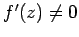
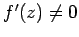
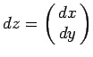
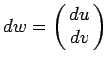
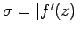
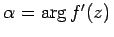

Inhalt Index DeskTop Bronstein

 Funktionentheorie Funktionen einer komplexen Veränderlichen Konforme Abbildung Begriff und Eigenschaften der konformen Abbildung
Funktionentheorie Funktionen einer komplexen Veränderlichen Konforme Abbildung Begriff und Eigenschaften der konformen Abbildung


Unter einer konformen Abbildung versteht man die Abbildung der z- in die w-Ebene mit Hilfe einer analytischen Funktion w =f(z) in allen Punkten  , in denen  ist.
, in denen  ist.
Die konforme Abbildung besitzt die folgende Haupteigenschaft: Alle Linienelemente  im Punkt z erfahren bei der Überführung in Linienelemente  im Punkt w dieselbe Streckung im Verhältnis  und dieselbe Drehung um den Winkel . Dadurch werden geometrische Gebilde in einem infinitesimalen Gebiet in ähnliche Figuren transformiert, behalten also ihre Form bei (s. Abbildung):
Geometrische Gebilde endlicher Abmessungen werden zwar verzerrt dargestellt, die Schnittwinkel zwischen den Kurven bleiben aber erhalten, u.a. auch die Orthogonalität der Kurvenscharen (s. Abbildung).
Konforme Abbildungen haben in der Physik, Elektrotechnik, Hydro- und Aerodynamik sowie in anderen Anwendungsgebieten der Mathematik weite Verbreitung gefunden.